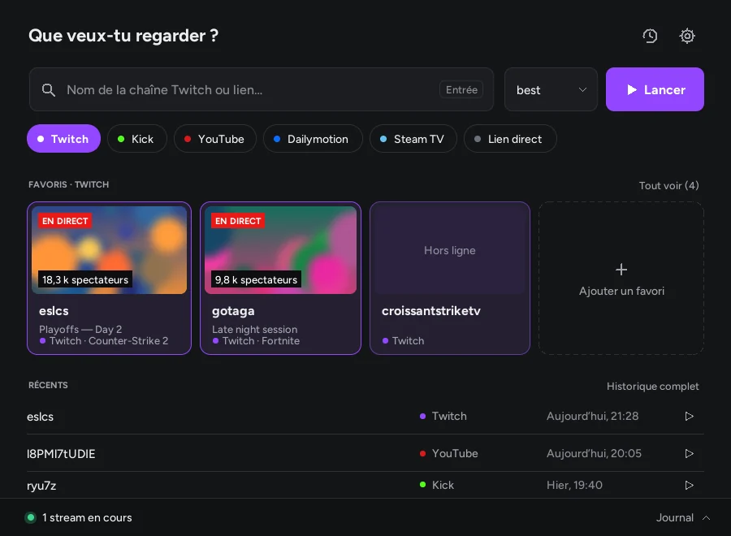
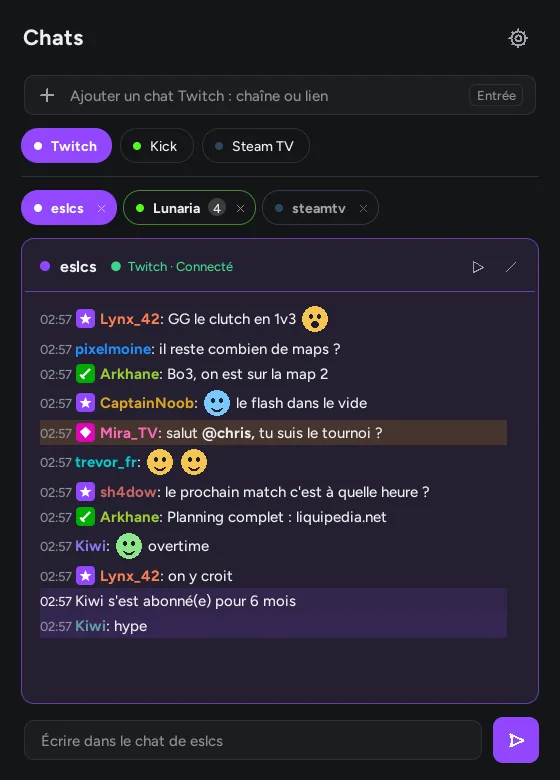
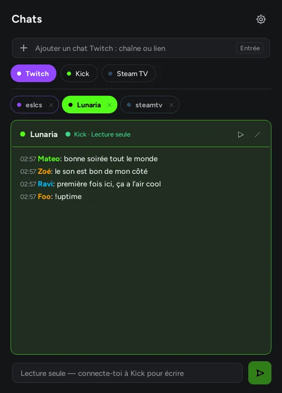
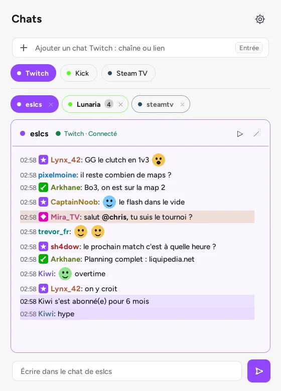

Launcher
v1.5.0 · Windows 10/11 · Linux x86_64- Sous Linux, rends l'AppImage exécutable, puis lance-la :
chmod +x StreamlinkLauncher-1.5.0-x86_64.AppImage - Au premier lancement, le lanceur trouve Streamlink tout seul, ou te dit comment l'installer.
Streamlink Launcher ouvre Twitch, Kick, YouTube, Dailymotion et Steam TV dans VLC, mpv ou PotPlayer. Streamlink Chat garde les chats Twitch, Kick et Steam TV dans une fenêtre à côté. Même style, même légèreté, aucune dépendance.
Une interface légère pour Streamlink, en Python et Tkinter. Elle retient tes favoris, te dit qui est en direct et lance le stream sans publicité Twitch, dans le lecteur que tu as choisi.

best, 1080p60, audio_only, ou une liste de secours comme 720p60,720p,best..url.platforms.json : ajoute les tiennes, avec leur couleur.Le mode mini : une barre flottante façon Spotlight, depuis n'importe quelle application.
Le compagnon du lanceur, dans l'esprit de Chatterino. Twitch, Kick et Steam TV dans une seule fenêtre, chacun à la couleur de sa plateforme. La lecture se fait sans compte.
Passe la souris sur le chat ou remonte : le défilement se met en pause, comme dans l'appli. Sur Twitch, écris un message ; Tab complète les pseudos.
| Plateforme | Lecture | Écriture |
|---|---|---|
| Twitch | Sans compte | Après connexion |
| Kick | Sans compte expérimental | Après connexion |
| Steam TV | Sans compte | Lecture seule |



Dans le chat, ▶ lance le stream avec le même Streamlink que le lanceur. Dans le lanceur, tes favoris te disent qui est en direct.
Mêmes composants dessinés, mêmes couleurs par plateforme, thème clair, sombre ou automatique qui suit Windows.
Chaque appli cherche sa nouvelle version sur GitHub, vérifie sa taille et son SHA-256, remplace l'exécutable et redémarre.
Gratuit et sous licence MIT. Il te faut Streamlink et un lecteur vidéo comme VLC ou mpv.
chmod +x StreamlinkLauncher-1.5.0-x86_64.AppImagechmod +x StreamlinkChat-0.2.0-x86_64.AppImageChaque release publie un fichier SHA256SUMS.txt pour vérifier ce que tu télécharges. Les exécutables Windows ne sont pas encore signés : si SmartScreen s'affiche, choisis Informations complémentaires puis Exécuter quand même.